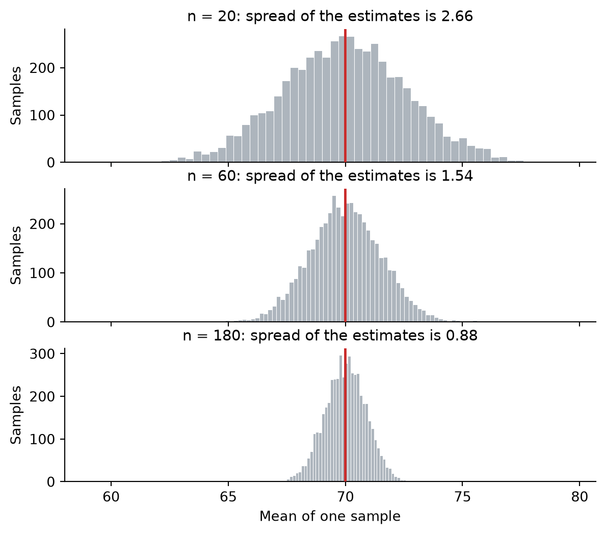

Keywords: standard error, variance addition, variance multiplication
2.1 How far off is one estimate?
The last chapter ended on a good note and a loose thread. The good note: the sample mean is unbiased, so the procedure does not lean. The loose thread: you do not get five thousand samples. You get one, and that one landed anywhere between the high fifties and the high seventies.
So the question left over is how far off a single estimate is likely to be.
import numpy as npimport matplotlib.pyplot as pltrng = np.random.default_rng(68)# The same ten thousand students, and the same twenty we drew from them.population = np.clip(np.round(rng.normal(70, 12, 10_000)), 0, 100)our_sample = rng.choice(population, 20, replace=False)print(f"True mean of the year: {population.mean():.2f}")print(f"True spread of the year: {population.std():.2f}")
True mean of the year: 69.99
True spread of the year: 11.94
rng_sim = np.random.default_rng(2024)def sample_means(n, repeats=5_000):"""Draw n students, take their mean, repeat.""" picked = np.array([rng_sim.choice(population.size, n, replace=False)for _ inrange(repeats)])return population[picked].mean(axis=1)means_20 = sample_means(20)print(f"Spread of the sample means: {means_20.std(ddof=1):.2f}")
Spread of the sample means: 2.66
We now have two numbers that both describe scatter, and they are not measuring the same thing.
The 11.94 from Figure 1.1 is about students. It says that a student picked at random sits about 12 marks away from the average student, which is why the year contains people in the forties and people in the nineties.
The 2.66 from Figure 1.3 is about estimates. It says that when you draw twenty students and average them, the number you get sits about 3 marks away from the true 69.99.
Estimates scatter far less than students do, and averaging is the reason. A sample of twenty will usually contain a few strong students and a few weak ones, and they cancel in the average. For a sample mean to land far from the truth, the draw has to go the same way twenty times over, and that is rare.
2.2 The width depends on how many you ask
Twenty students was our choice, and nothing forced it. What happens if we ask more?
means_60 = sample_means(60)means_180 = sample_means(180)fig, axes = plt.subplots(3, 1, figsize=(7, 6), sharex=True)for ax, means, n in [(axes[0], means_20, 20), (axes[1], means_60, 60), (axes[2], means_180, 180)]: ax.hist(means, bins=60, color="#adb5bd", edgecolor="white", linewidth=0.4) ax.axvline(population.mean(), color="#c92a2a", linewidth=1.8, zorder=4) ax.set_title(f"n = {n}: spread of the estimates is {means.std(ddof=1):.2f}", fontsize=11) ax.set_ylabel("Samples") ax.spines[["top", "right"]].set_visible(False)axes[2].set_xlabel("Mean of one sample")plt.show()

Figure 2.1: Sample means from 5,000 draws at three different sample sizes. The true mean is the red line. Larger samples produce estimates that huddle closer to it.
All three are centred on the truth, which is the unbiasedness from the last chapter turning up three more times. What changes is the width. Twenty students give estimates scattered by about 2.7 marks, sixty by about 1.5, a hundred and eighty by about 0.9.
Now compare the first panel with the last. We went from 20 students to 180, nine times as many, and the scatter fell from 2.7 to 0.9. That is not a ninth of what it was. It is about a third.
base = means_20.std(ddof=1)print(f"3 times the students: scatter falls to "f"{means_60.std(ddof=1) / base:.2f} of what it was")print(f"9 times the students: scatter falls to "f"{means_180.std(ddof=1) / base:.2f} of what it was")print(f"\nFor comparison: 1/sqrt(3) = {1/ np.sqrt(3):.2f},"f" 1/sqrt(9) = {1/ np.sqrt(9):.2f}")
3 times the students: scatter falls to 0.58 of what it was
9 times the students: scatter falls to 0.33 of what it was
For comparison: 1/sqrt(3) = 0.58, 1/sqrt(9) = 0.33
Tripling the sample cut the scatter to 0.58 of what it had been, and \(1/\sqrt{3}\) is 0.58. Multiplying the sample by nine cut it to 0.33, and \(1/\sqrt{9}\) is a third exactly. Whatever governs this, the sample size is getting in under a square root.
There is a practical sting in that. Halving your uncertainty costs four times the data: 20 students to 80. Halving it again costs four times that, 320 students in all, for the same size of improvement. This is why sample sizes in real studies plateau where they do, and why “just collect more data” stops being useful advice quite quickly.
But a pattern is not an explanation, and this pattern is incomplete besides. It says how the scatter responds when \(n\) changes. It says nothing about where the scatter starts from. Twenty students gave us 2.7 marks, and so far nothing explains why 2.7 rather than 27 or 0.27.
2.3 Addition and multiplication of variances
To find the missing constant we leave the exam hall for a page and roll some dice.
A single die lands on 1 through 6. There are two obvious ways to build something bigger out of it; roll a second die and add the two, or roll once and double what you get. Both give you a number between 2 and 12, both average 7, and they are not the same at all.
faces = np.arange(1, 7)two_dice = np.array([a + b for a in faces for b in faces]) # all 36 rollsdoubled =2* facesprint("One die: ", faces)print("Two dice added, grouped by the first die:")print(two_dice.reshape(6, 6))print("One die doubled:", doubled)print()for name, values in [("One die", faces), ("Two dice added", two_dice), ("One die doubled", doubled)]:print(f"{name:18s} mean {values.mean():5.2f} "f"variance {values.var():7.3f} sd {values.std():6.3f}")
One die: [1 2 3 4 5 6]
Two dice added, grouped by the first die:
[[ 2 3 4 5 6 7]
[ 3 4 5 6 7 8]
[ 4 5 6 7 8 9]
[ 5 6 7 8 9 10]
[ 6 7 8 9 10 11]
[ 7 8 9 10 11 12]]
One die doubled: [ 2 4 6 8 10 12]
One die mean 3.50 variance 2.917 sd 1.708
Two dice added mean 7.00 variance 5.833 sd 2.415
One die doubled mean 7.00 variance 11.667 sd 3.416
Figure 2.2: Three ways to end up with a number. Adding two dice and doubling one die cover the same range and share the same average, but they do not spread the same way.
Compare the middle panel with the right one. Same range, same average, and twice the variance on the right.
The difference is in the shape. Two dice added pile up in the middle, because there are six ways to make 7 and only one way to make 12. A doubled die is flat: 2, 4, 6, 8, 10 and 12 all turn up equally often, so it visits the extremes six times as readily. Reaching the edge of the range is easy in one case and rare in the other, and that is exactly what the variance is measuring.
Each panel follows a rule.
Addition. Two dice added have variance 5.833, exactly double the 2.917 of one. Add quantities that have nothing to do with each other and their variances add.
Multiplication. A doubled die has variance 11.667, exactly 4 times 2.917. Not 2 times. Multiply a quantity by \(c\) (here, 2) and its variance is multiplied by \(c^2\) (here, 4). Why squared? Because variance is measured in squared units, and doubling the units multiplies the squares by four.
The rules we just learned are about adding and scaling, and a sample mean is an addition followed by a division: add twenty students, divide by twenty.
Adding twenty students, each with variance \(\sigma^2\), gives a total with variance \(20\,\sigma^2\). Dividing by twenty multiplies that by \(\frac{1}{20^2}\).
\[
\operatorname{Var}(\bar{x}) = \frac{20\,\sigma^2}{20^2} = \frac{\sigma^2}{20}
\qquad\text{, so in general}\qquad
\operatorname{Var}(\bar{x}) = \frac{\sigma^2}{n}
\]
Square root both sides and there is the pattern the simulation kept pointing at.
\[
\text{spread of the sample means} = \frac{\sigma}{\sqrt{n}}
\]
print(f"Variance of the year sigma^2 = {population.var():7.2f}")print(f"Divided by n = 20 sigma^2 / n = {population.var() /20:7.2f}")print(f"Square root of that sigma / sqrt(n) = {np.sqrt(population.var() /20):5.2f}")print(f"\nSpread observed in the simulation = {means_20.std(ddof=1):5.2f}")
Variance of the year sigma^2 = 142.63
Divided by n = 20 sigma^2 / n = 7.13
Square root of that sigma / sqrt(n) = 2.67
Spread observed in the simulation = 2.66
2.67 predicted against 2.66 observed, the width of Figure 1.3 back in the last chapter.
2.5 The standard error
That spread has a name. The standard error (or standard error of the mean) is how much an estimate varies from sample to sample, and for a sample mean it is \(\sigma/\sqrt{n}\).
Which would be useless on its own, because \(\sigma\) belongs to the population and the population is what we cannot see. But we have a stand-in for \(\sigma\) from the last chapter:
print(f"Our 20 students: mean = {our_sample.mean():.2f}, s = {our_sample.std(ddof=1):.2f}")print(f"Estimated standard error, s / sqrt(n) = "f"{our_sample.std(ddof=1) / np.sqrt(20):.2f}")
Our 20 students: mean = 70.80, s = 14.87
Estimated standard error, s / sqrt(n) = 3.33
So what do these numbers actually tell us? Both 70.80 and 14.87 describe the twenty students in front of us. The 3.33 does something different, and the difference is worth being clear about.
\(s = 14.87\) is a fact about students. Some of them did well and some did badly. Knowing the population perfectly would not make this number go away, because students really do differ from one another.
\(s/\sqrt{n} = 3.33\) is a fact about our answer. It says how much the 70.80 might move if we had walked into the room on a different day and met twenty different students. That is a property of our procedure, not of the students.
The \(n\) is what carries that distinction. With \(s = 14.87\) and twenty students the standard error is 3.33. With the same \(s\) and two thousand students it is 0.33. The students are equally varied in both cases, and the answer is ten times firmer in the second.